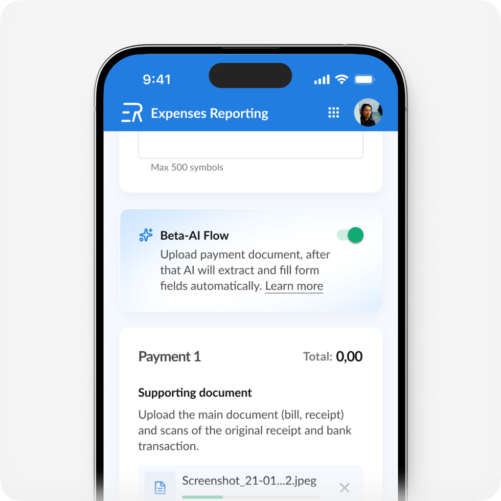
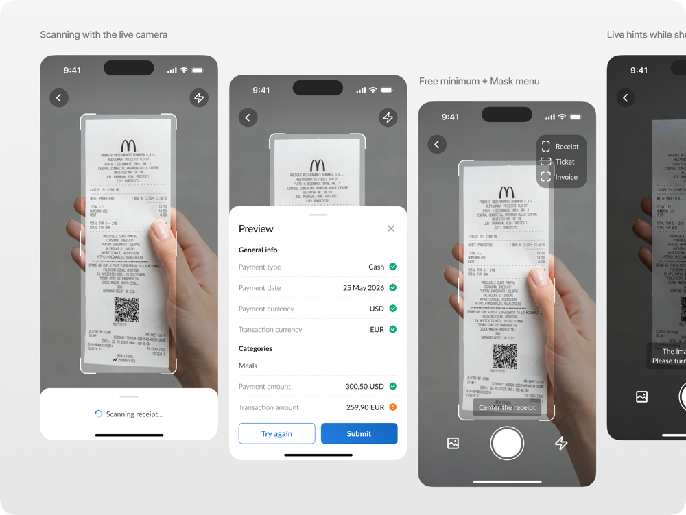
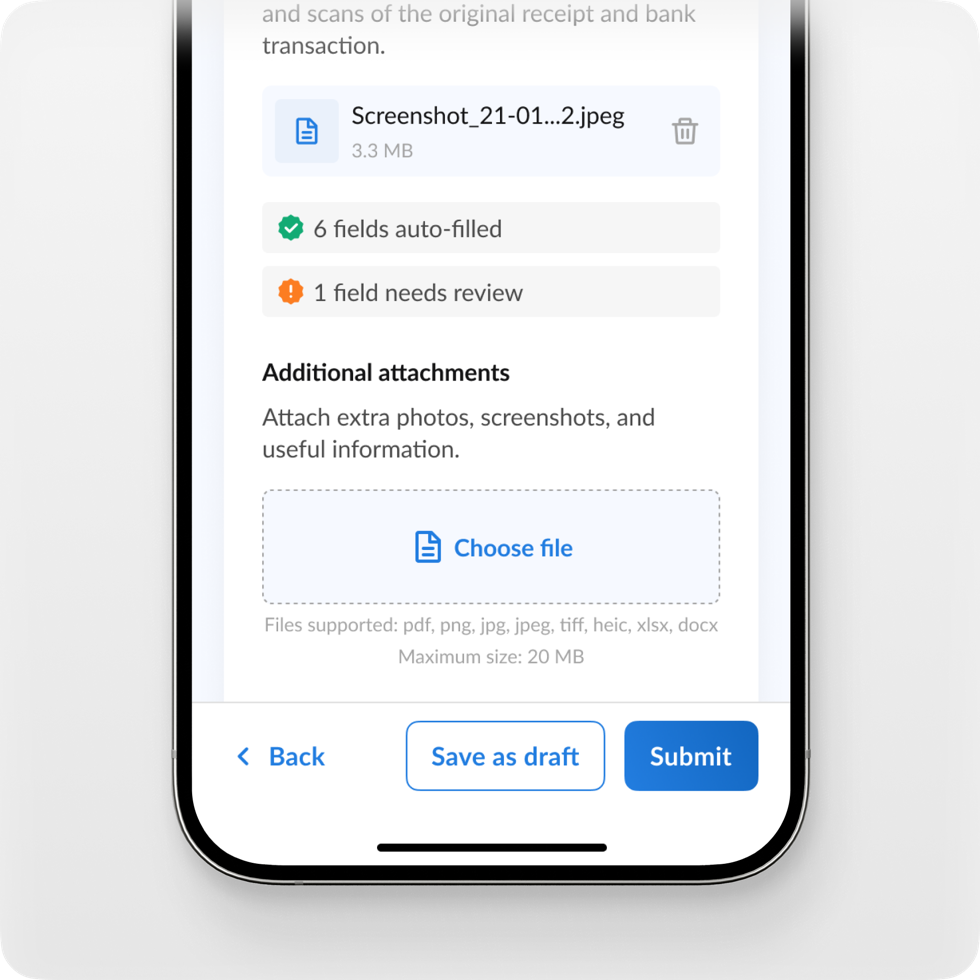
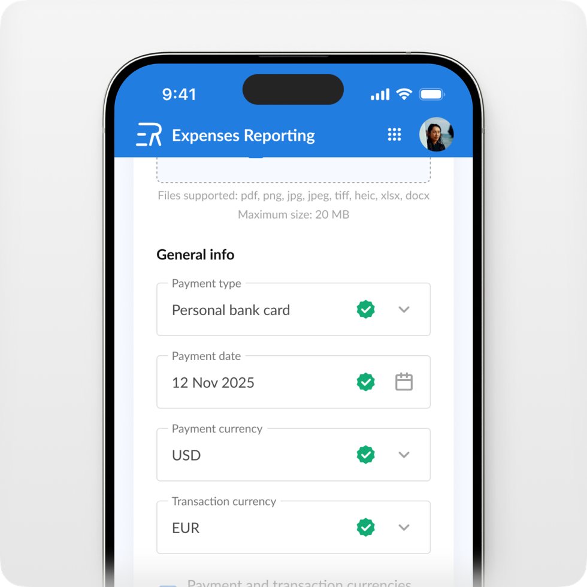
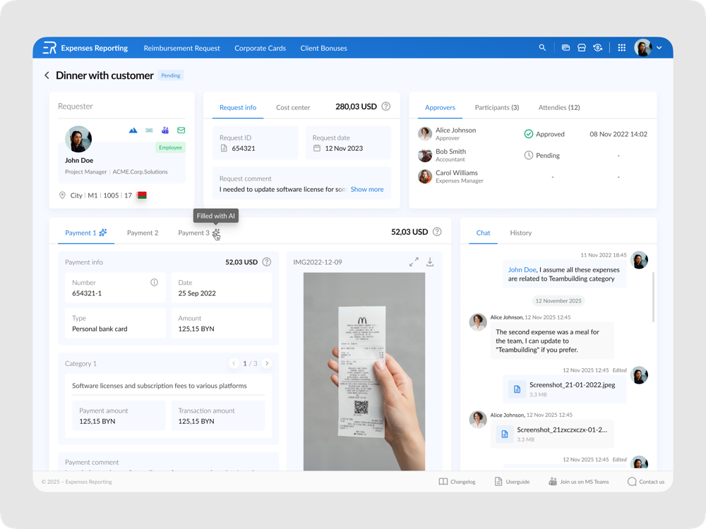
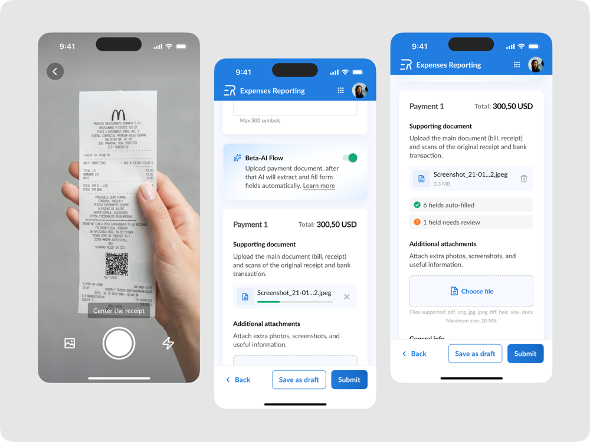
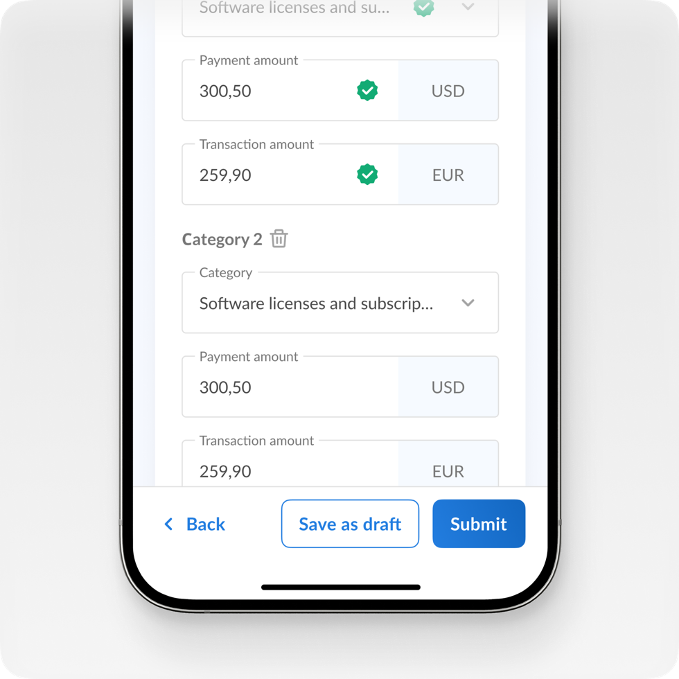
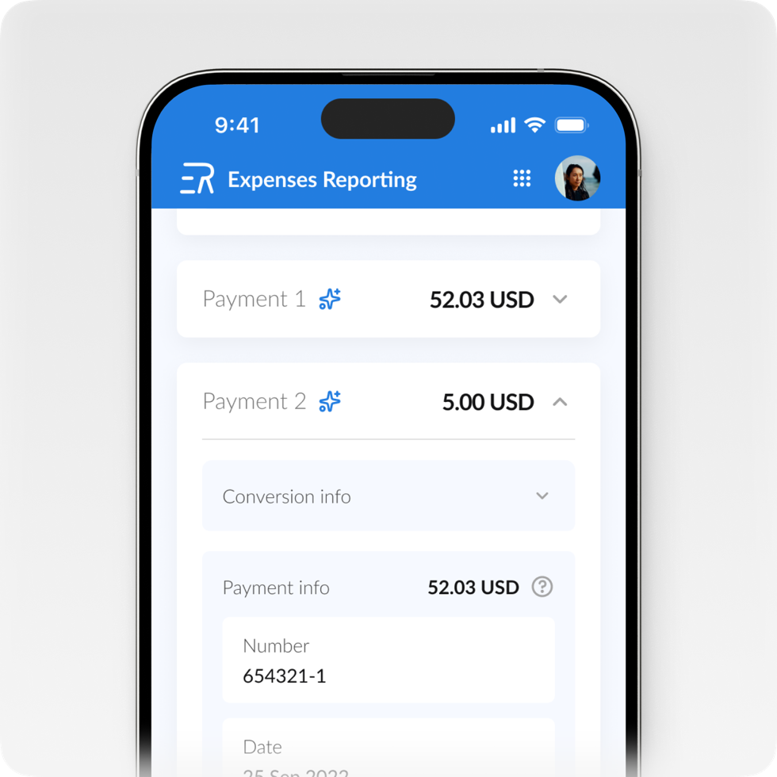

AI-Autofill Forms Feature
01. Discover — the pain and the task
Менеджеры, которые часто совершают траты на нужды компании, за месяц набирают стопку чеков, а потом садятся заполнять заявки на возмещение или отчёты по корпоративной карте. Заполнить одну форму — не проблема, но при 20+ чеках это превращается в часы ручного ввода. Запрос на ускорение процесса вырос в задачу от продакт-оунера: внедрить ИИ в формы — сканировать чеки и автозаполнять поля по фото.
Формального исследования не было — я начала с самого процесса и технологии: пошла смотреть, как устроен OCR, что он может считать с фото и насколько сложно это внедрить. Для продукта это был критический момент: больших бюджетов нет, решение должно быть дешёвым, простым в поддержке и быстрым в реализации.

02. Define — goal and constraints
Цель: ускорить подачу и согласование заявок с помощью ИИ — не теряя доверия пользователей.
Ограничения: нет бюджета на платные OCR-сервисы, нет времени разрабатывать собственные сложные решения, дешёвая поддержка. Исследование технологии показало, что OCR — это больше, чем просто «считать фото»: есть подсказки в реальном времени («слишком темно — точность упадёт»), и есть сканирование живой камерой, а не готовым снимком. Всё это — либо время разработки, либо деньги. Задача оформилась как выбор: какой уровень функциональности мы можем себе позволить?
03. Explore — three options and the price of convenience
Я сделала 3 скетча с подробными различиями и примерной стоимостью интеграции:
– Живые подсказки при съёмке — удобно, но платный сервис или время команды.
– Сканирование живой камерой — та же ценовая категория.
– Бесплатный минимум: статичные подсказки, мини-онбординг с рекомендациями по освещению и качеству снимка, и помощники камеры — фонарик, подсказка центрирования.
С этими скетчами я пошла к продакт-оунеру: позволяет ли бюджет более дорогие, но более удобные варианты? Вместе мы пришли к выводу: никаких платных сервисов, никаких собственных сложных решений — идём самым дешёвым путём, но делаем максимально удобно.

04. Design — the solution
Beta-AI Flow — опциональный режим в обоих модулях. Пользователь фотографирует чек камерой: есть фонарик для плохого освещения, подсказка центрирования «расположите чек по центру», и иконка загрузки из галереи — на случай, если пользователь передумает фотографировать. Перед первым сканированием — мини-онбординг с рекомендациями по освещению и качеству снимка. ИИ извлекает данные и заполняет поля; каждое поле получает статус уверенности — заполнено автоматически, требует проверки или требует ручного ввода — а сводка на уровне документа даёт общую картину одним взглядом. Согласующая сторона — руководитель и бухгалтер — видит, что заполнил ИИ, и обсуждает спорные поля прямо в чате заявки.



05. Key decisions
- Ограничения как входные данные для дизайна. Уровень UX захвата выбирался не по вкусу, а по трём скетчам с оценкой стоимости — решение принималось совместно с ПO на основе цены и сроков.
- Никакой универсальной рамки. Сначала я планировала внедрить рамку центрирования, но документы разные: счета — А4, чеки — длинные и прямоугольные, причём длина может быть абсолютно разной. Универсальная рамка не помогает в точности сканирования, поэтому камера получила фонарик, подсказку центрирования и загрузку из галереи.
- Двухуровневый сигнал уверенности ИИ. Статусы полей + сводка по документу — доверие оценивается одним взглядом.
- Сигнал доверия на согласующей стороне. Бейдж «Заполнено ИИ» задаёт правильный уровень внимательности вместо иллюзии «введено вручную».
- Опциональность, а не принуждение. На стадии бета автоматизация — выбор пользователя.



06. Deliver & reflect
Фича ушла в продакшн сразу после моего ухода из компании, поэтому нет количественных данных по экономии времени или точности распознавания. Ожидаемый эффект — ускорение подачи и согласования: обе стороны фокусируются на полях с низкой уверенностью вместо проверки всей формы.
Что я забираю из этого кейса. ИИ-фичи проектируются не только для того, кто заполняет, но и для того, кто согласовывает — доверие нужно с обеих сторон процесса. Ограничения (бюджет, сроки) — не враг хорошего дизайна, а его входные данные: самый дешёвый путь может быть удобным, если осознанно выбирать, чем жертвовать. А опциональность на стадии бета — это не компромисс, а дизайн-решение, которое позволяет доверию расти постепенно. Если получу доступ к данным использования, вернусь к кейсу: сам тоггл опциональности покажет, как быстро пользователи начинают доверять ИИ.